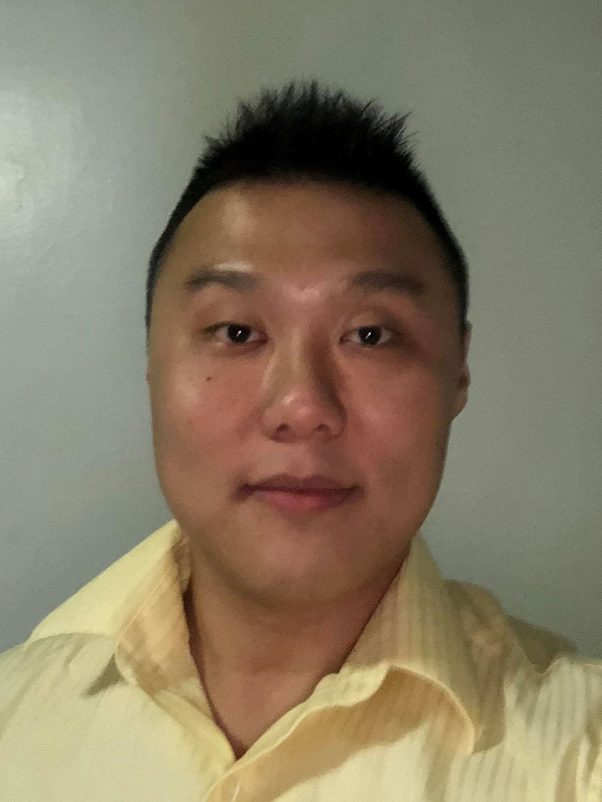

About Me

It feels like a lifetime ago, I am originally from a small village in Malaysia and I came to the United States when I was 11 years old. Right away, I was placed in a private school where the majority of students only spoke English and I had to quickly adapt to the American culture. Luckily for me, my elementary and high school teachers were all very caring and lived out their lessons through daily examples as opposed to words on the board. Decades after I left their care, their lessons still ring truth to me and they have served me well in life. What I am trying to say is that, I will not be who I am today had they not been who they were. I did not get to where I am today by myself, and I feel extremely blessed and thankful of what my past experiences have taught me.
As of August 18th, 2018, I am studying Computer Engineering in Columbia University. Many of my classmates already have a strong foundation with the subject and when I first started my class I was struggling so much that I was only able to sleep an average of 3 to 4 hours a day. It bothered me that I needed a significantly greater time to understand a topic yet other students were able to understand that same topic in a much shorter time. One of my classmate who is already a Software Engineer saw my struggle and sort of took me under his wings during the first week. I am very thankful for his kindness but I soon realized that if I kept letting him take the lead, I am never going to grow. Therefore, I started to go on my own and I spend as much time as needed to learn every single topics thrown my way. Today, I am proud to say that my skills as a developer have vastly grown compared to the beginning of the semester, and what used to give me a world of trouble is now an appetizer in my eyes.
My original plan for Columbia was to lay low and keep a low profile. After last week’s presentation, it is safe to say that everybody now knows who I am, what I am capable of, and I can no longer remain quiet. One of my high school teacher once said to me that I will never realize my true potential until I use my talents as gifts for others. It doesn’t matter where I began, it matters where I end up. It doesn’t matter to me that I am not originally an Ivy League student and the only person I will compare myself with is, well, myself. Throughout my times in Columbia, I have established a very good relationship with my classmates and many of us have even became friends. Despite all of that, I am going to declare to my class that my intention is to challenge and compete with them, only then can we refine our skills and become better at what we do. I will be aiming for the top.
This portfolio page might look a bit plain right now, I will keep updating it with more projects down the line. For the future, I plan on starting a career in the tech industry and either go into Data Science or Machine Learning. I understand that the industry is extremely competitive and the majority of people will just simply run out of steam before they reached the finish line. This is where my fire will burn the brightest, for when everyone around me is ready to give up, I take another step forward.